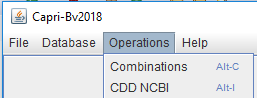
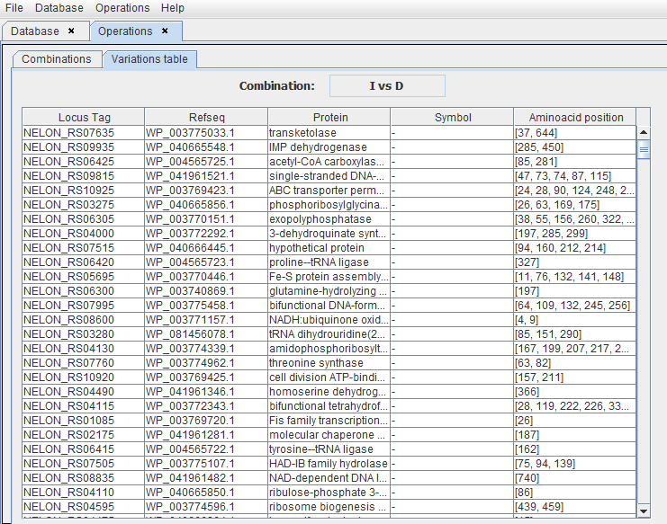
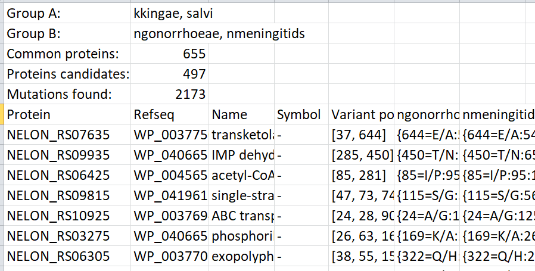
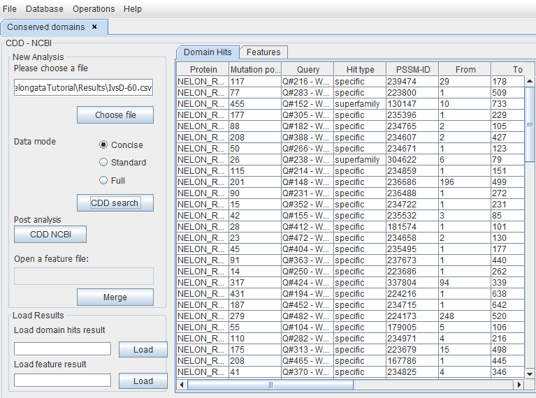
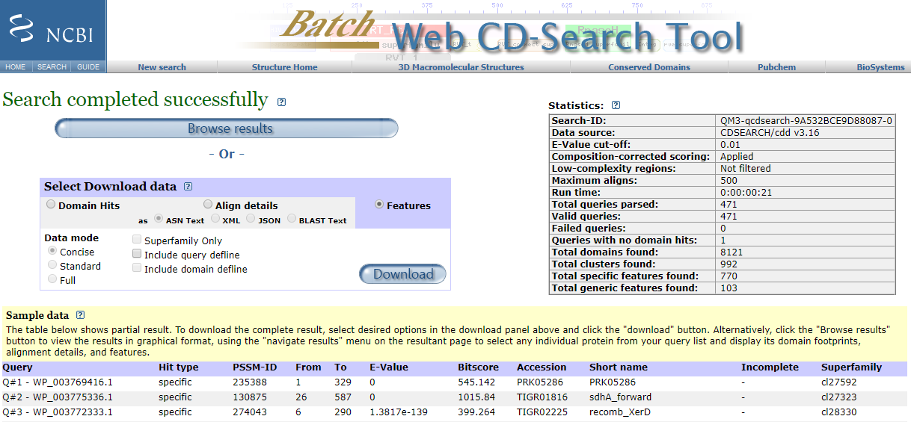
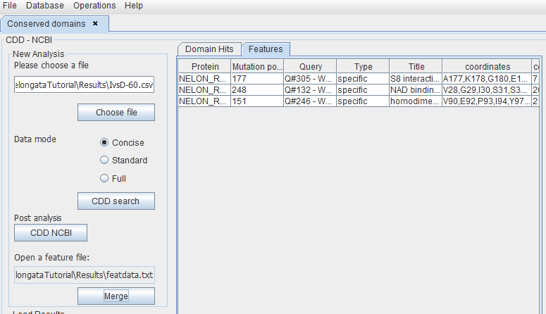

Operations menu
Subsequently to database feeding, there are two options. The option "Combinations" allows the user to compare two groups of organisms resulting in a list of variations in conserved proteins. Then "CDD NCBI" allows to compare these lists to identify conserved domains present in the CDD database, permitting to classify variations that could functionally affect proteins.
Combinations
After clicking "Combinations", the user can set the database created previously that will be used for analyses (herein "nelongata0"). All the organisms in the database will be displayed as shown in the picture below.

The user will have to classify the organisms into two groups based on a phylogeny (ex: bacteria that diverge before/after the coccoid transition). The reference bacterium is always in group A. Therefore other organisms need to be separated in accordance. In the example, bacteria that diverge before the coccoid transition (bacilli) will be placed in group A (as is the reference). The bacteria that diverge after this node (cocci) are placed in group B.

Next, the user can filter the proteins according to identity percentage, (herein at least 60% identical in all species) and then click "Query".
Both groups can be compared based on 6 different analyses:
- IvsD: Search for identical amino acid positions in group A but different in B
- ISvsD: Search for amino acid positions identical or similar in group A but different in group B
- IvsS: Search for identical amino acid positions in group A but similar in group B
- Gap In: Search for the position of a gap that is in group A but not in group B
- Gap Out: Search for the position of a gap that is in group B but not in group A
- Stop codon: Search for the position of a stop codon in group B
Results
The user will have to save and name the results file in the "Results" folder. The extension ".csv" needs to be added. The results can be displayed on the screen for a preview, but the user can always open the file as a spreadsheet in Excel or Calc.
As an example, the protein with locus tag NELON_RS09935 has a variation in the AA at position 285. This AA is identical in the group A but different in the group B. All these results can subsequently be sorted according to their putative functional impact (see “CDD NCBI”).
More information is available in the csv file such as the organism names and the number of common proteins, candidate proteins, and mutations found. It is also possible to get the amino acids that changed as well as the impact according to the Graham index and the exchange values (EX).
CDD NCBI
In the left panel, the user can add the results file obtained before. By clicking the "CDD search" button, Caprib will compare the results obtained with the positions of conserved domains in the CDD NCBI database.

This will produce a merged file that only shows the proteins having variations into a conserved domain.
By clicking the "CDD NCBI" button, a web browser will open the NCBI site where the user can download the Features file for the concerned proteins and save it in the Results folder of this project.
This file can be used in Caprib as shown below, and by clicking the "Merge" button the program will generate a merged Feature file in the Results folder. This file contains only AA variations that are located in a conserved CCD domain.
